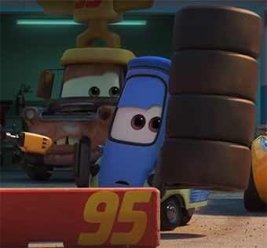

Clases de Pits
Ubicación
Andá a Radiador Springs por la Ruta 66 y visitanos en Casa Della Tires para asistir a las clases de pits del maestro Guido.
Además allí vas a ser recibido por Luigi donde podrás aprender todo lo que quieras saber de neumáticos y de Ferraris.
Proceso
En cuatro clases intensivas Guido va a enseñarte a como ser un pit de carreras profesionales.
Vas a aprender el valor de los pits en un equipo de carreras y solo por $1000 la clase o $3500 las cuatro clases en un futuro podrías trabajar con corredores como el Rayo McQueen y ayudarlos a ganar una Copa Piston.
